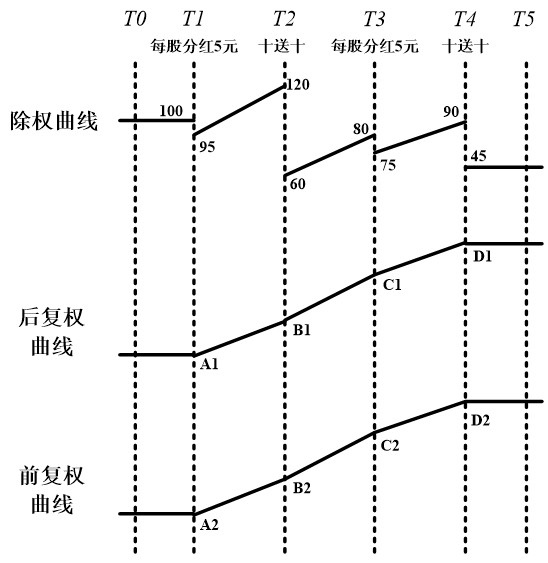

This documents my learning of stock technical analysis, keep updating.
- python packages to use
- python notebook extra setting
- Some good blogs
- Using tushare to get historical data
- Using pandas and yahoo is a better choice of getting daily data
- Build personal stock data repo
- 这里有一篇用JAVA建立自己股票数据系统的文章
- 使用通达信等本地股票软件的数据
- 通达信的本地数据
- 知乎上的一个关于获取数据的合集
- 各种股票软件当地数据的数据结构
- 实时行情数据接口
- 前后，不复权
- Very useful Yahoo API to obtain data
- The schema of my MongoDB
python packages to use
- zipline - for testing framework
- tushare - for chinese stock market data
- talib - for indicators and functions. The official document is here
python notebook extra setting
import zipline as zp
import tushare as ts
ts.set_token('ef0f57f6c63416271c140912cb1e2bf58e1580f1aa5147efa19538085b21cf60') # use your own free api key
Some good blogs
Using tushare to get historical data
- A good post to quick check.
- The stock codename in ts may be different than normal stock software.
- to get the shanghai and shenzhen index use the following code example
sh_index=ts.get_hist_data('sh')
sz_index=ts.get_hist_data('sz')
Using pandas and yahoo is a better choice of getting daily data
tushare is not very stable, it is slow. It also has 3 years limitation.
For using pandas and yahoo, these are resources:
如果要获取沪深股市信息股票名称格式如下：
上海：股票代码.SS
深圳：股票代码.SZ
import pandas_datareader.data as web
daily = web.DataReader('000001.SS', 'yahoo', '2000-01-01', '2016-01-01')
Build personal stock data repo
A good post of building MongoDB stock data repo
* One key component [YfinanceMongo](https://github.com/figurebelow/yfinanceMongo)
* The key wrapper [YFinanceFetcher](https://github.com/figurebelow/yfinancefetcher)
Using crontab to update this repo automatically.
这里有一篇用JAVA建立自己股票数据系统的文章
使用通达信等本地股票软件的数据
通达信的本地数据
- 最全面的方式是在通达信中键入34打开数据导出，然后导出数据为CSV的格式。
- 这种方式可以选择前后复权或者不复权。
- 必须在windows才有这项功能
- VMShareFolder的同步
- pywinauto来实现自动操作
可以在
安装目录\vipdoc\{sh,sz}\lday下直接读取binary的日线数据文件，读取的格式是：
int date; int open; int high; int low; int close; int amount; int vol; int reservation;
参考文档 - 目录位置
参考文档 - 数据结构通达信的复权有一个精确复权的选项，在这个帖子里面有比较
这个blog有一套很全面的通达信目录文件结构的说明
目录文件结构说明C code for read in the daily data
// stock.cpp : Defines the entry point for the console application.
//
#include " stdafx.h "
#include < stdio.h >
#include < conio.h >
#include < stdlib.h >
typedef struct
{
int date;
int open;
int high;
int low;
int close;
int amount;
int vol;
int reservation;
} StockData;
StockData stockData;
int read_data(FILE * );
void main()
{
FILE *fp;
if((fp = fopen("E:/通达信/Vipdoc/sh/lday/sh600036.day","rb")) == NULL) // 打开招商银行日线
{ printf("Error: Can^t open sh600036.DAY ! ");
exit(0); }
read_data(fp);
fclose(fp);
if(getch()==0) getch();
exit(0);
}
int read_data(FILE * fp)
{
float fn;
while (! feof(fp)) {
fread(&stockData,sizeof(StockData),1,fp);
printf("%10lu ",stockData.date);
fn=float(stockData.open)/100;
printf("%8.2f ",fn);
fn=float(stockData.high)/100;
printf("%8.2f ",fn);
fn=float(stockData.low)/100;
printf("%8.2f ",fn);
fn=float(stockData.close)/100;
printf("%8.2f ",fn);
printf("%8lu ",stockData.amount);
fn=float(stockData.vol)/100;
printf("%8.2f ",fn);
}
printf(" ");
return 0;
}
知乎上的一个关于获取数据的合集
其中我准备实现的是:
- yahoo
- Sina
- 雪球
- sohu 一个范例e
- tushare
各种股票软件当地数据的数据结构
实时行情数据接口
前后，不复权
这个帖子说得很详细

Very useful Yahoo API to obtain data
Spent more time to dig into the Yahoo API. They actually have all data including dividend and split.
There are several different APIs:
- For getting the historical information:
http://ichart.yahoo.com/http://ichart.yahoo.com/x?http://ichart.yahoo.com/table.csv?
The x? API can get access to dividend and split information, which is very important!
There is no complete API documentation that I can find. but a sample code looks like this:
http://ichart.finance.yahoo.com/x?s=IBM&a=00&b=2&c=1962&d=04&e=25&f=2011&g=v&y=0&z=30000
As far as I can tell, g=v means get the dividend and split, y and z seems not been used, and the starting date / ending date of a~f can be ignored if we need all information of the dividend and split. My example:
http://ichart.finance.yahoo.com/x?s=600859.SS&g=v
specifying the date can cut the data's from/to:
http://ichart.finance.yahoo.com/x?s=600859.SS&a=0&b=1&c=1998&d=0&e=1&f=2013&g=v
STARTDATE, 19980101
ENDDATE, 20130101
The table.csv? API is very similar, only difference is the lack of the split information.
A good post for the meaning of the parameters and a Java implementation
A exmaple:
http://ichart.finance.yahoo.com/table.csv?s=YHOO&d=0&e=28&f=2010&g=d&a=3&b=12&c=2009&ignore=.csv
| symbol | meaning |
|---|---|
| s | Ticker symbol |
| a | The "from month" - 1 |
| b | The "from day" (two digits) |
| c | The "from year" |
| d | The "to month" - 1 |
| e | The "to day" (two digits) |
| f | The "to year" |
| g | d for day, m for month, y for yearly, v for dividend |
Javascript built-in function can be used in the url too, example
http://ichart.yahoo.com/x?s=600839.SS&a={date.addMonths(-2).format('MM')}&b={date.today.format('dd')}&c={date.today.format('yyyy')}&d={date.addMonths(-1).format('MM')}&e={date.today.format('dd')}&f={date.today.format('yyyy')}&g=v&ignore=.csv
- For getting the latest information:
http://finance.yahoo.com/d/
http://download.finance.yahoo.com/d/quotes.csv?http://finance.yahoo.com/d/quotes.csv?
http://download.finance.yahoo.com/d/quotes.csv?s={SYMBOLS}&f={DATA THAT WE WANT}
f is for the data specification characters.
- Here is a good table for all the symbols
- Another good one
- Another yet good one
- gummy-stuff probably is the first person put everything together
There is another yahoo YQL API.
This post give some good information about this and a summary of other yahoo APIs
The schema of my MongoDB
collection per stock
collection name: '600033'
{'Date': 2010-01-15, // sorted
'Open': [{'value': 11.25,
'data_source': [1, 3, 4], // set
'vote': 3}, // sorted on 'vote'
{'value': 13.24,
'data_source': [2],
'vote': 1},
{'value': 24,
'data_source': [5],
'vote': 1}]
'Close': [...]
'High': [...]
'Low': [...]
'Volume': [...]
'Amount': [...]
- python packages to use
- python notebook extra setting
- Some good blogs
- Using tushare to get historical data
- Using pandas and yahoo is a better choice of getting daily data
- Build personal stock data repo
- 这里有一篇用JAVA建立自己股票数据系统的文章
- 使用通达信等本地股票软件的数据
- 通达信的本地数据
- 知乎上的一个关于获取数据的合集
- 各种股票软件当地数据的数据结构
- 实时行情数据接口
- 前后，不复权
- Very useful Yahoo API to obtain data
- The schema of my MongoDB